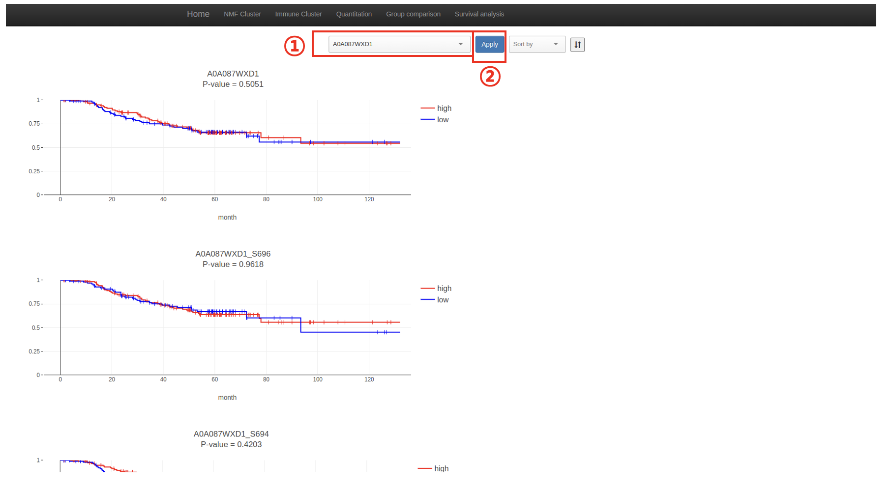
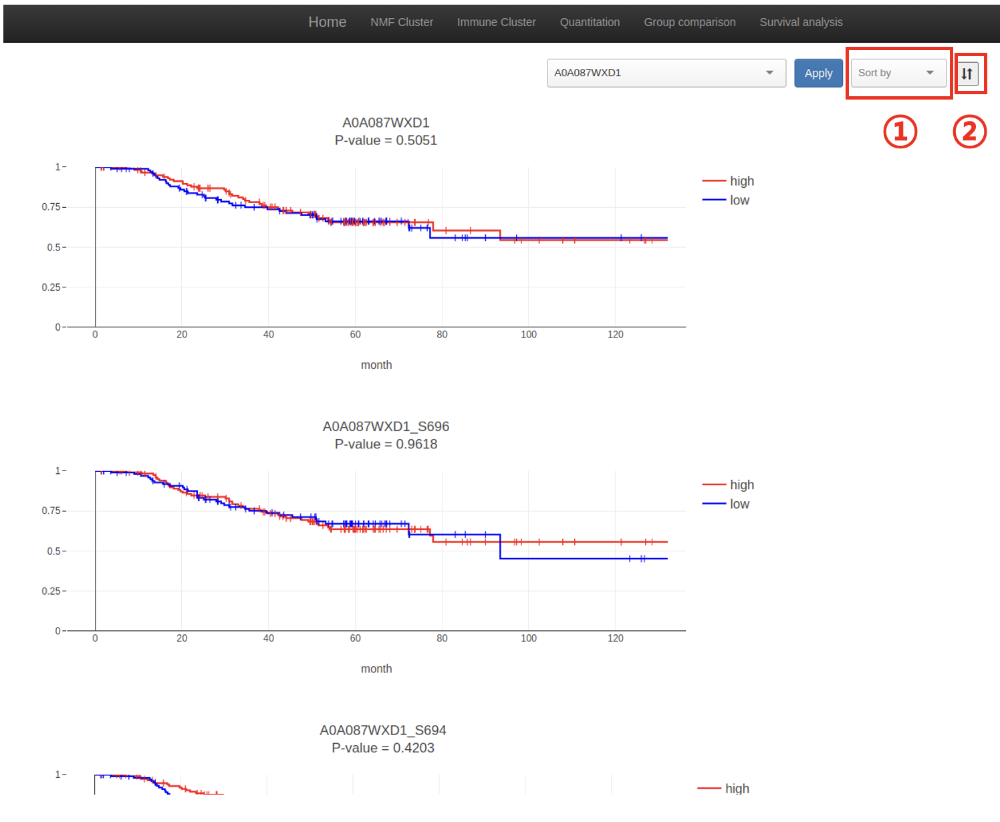
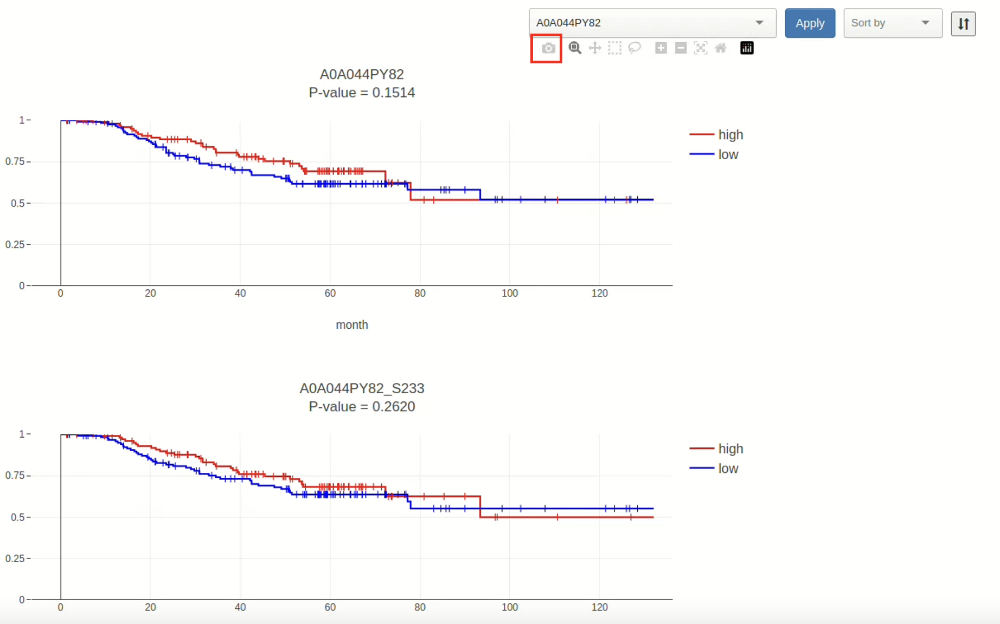

By using the Plotly.js library, the survial plots are arranged as the target into the line chart. P-value is calculated with the rank-sum, and the Expression is divided into high/low. Furthermore, '|' is expressed the deceased patient in the plot.
By using the Selectize.js library, search efficiency is improved to implement an auto-match function when input is made in the target search input box.
YYou can choose the target in the ①. After choosing the target to check, please click the 'Apply' button (②).
Finally you are able to get the line chart with the P-value
You can sort the box plot by only clicking the 'Sort by' (①). It consists of 'P-Value' and 'Gene Name'.
You can also adjust the ascending/descending order by clicking the ②.
If you want to zoom in & out, just cklik the zoom button. You can control the zoom function by clicking the button.
You may want to save the box plot data. Then click the button to save plot as image.
